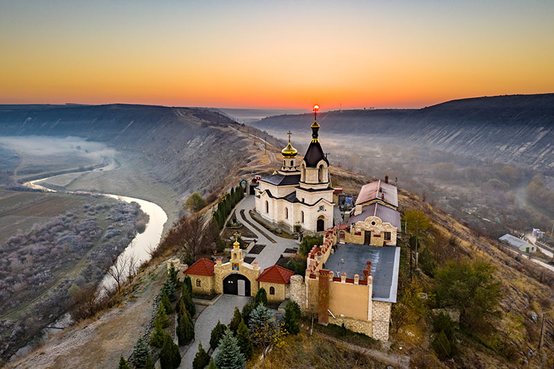
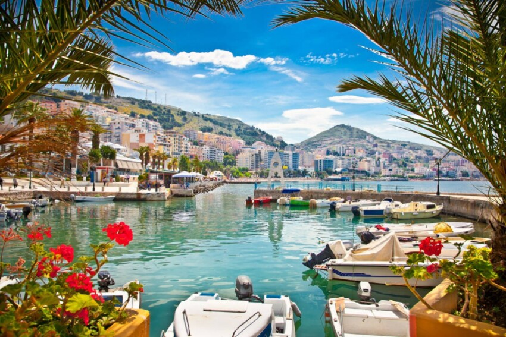

San Marino
Moldavia
Albania
Macedonia Del Nord

Isole Faraoe

Andorra


Francia, Italia, Spagna e Inghilterra non sempre soddisfano le aspettative. L’Europa ha da offrire davvero tanto e vale la pena scoprirla tutta.
L’Organizzazione mondiale del turismo, che si occupa del coordinamento delle politiche turistiche e promuove lo sviluppo di un turismo responsabile e sostenibile, ha delineato delle tendenze chiare sulle nazioni che registrano meno ingressi tra i loro confini: dalla lontananza e conseguenti costi elevati, alla situazione politica, la difficoltà di spostamenti etc...
Allora scopriamo nello specifico i 6 Paesi meno visitati in Europa: